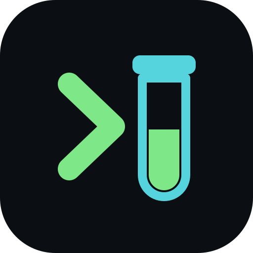

~/lab$labtrack▊pick a type, enter a record and a result above, then hit add result.
prepping a batch? leave the result blank and keep pressing enter. each record is added, ready to fill in from the log.
a protocol (e.g. NEBNext Ultra II, 16S or ONT ligation and barcoding kits) sets up every step for your samples. or upload a labtrack .csv or .txt export to pick up where you left off.
a type sets the units offered next to result, so you only type the number.
pick up a run, or bring results in from an instrument.
choose the CSV files exported from the TapeStation software (select them all, the PNGs aren't needed). then pick which sample each well belongs to.
keep the file: you can upload it later to continue this run.
each section is a step, top to bottom. records with a tube number get a tube; an empty tube is still waiting for its result.
on a phone you can also press and hold the picture to save it.
this clears all current entries. export or back up first if you need them. your record types are kept.
lays out every step and quantification checkpoint for your samples, so you only fill in the results as you go.
if this isn't your run, start a new one so results don't get mixed.